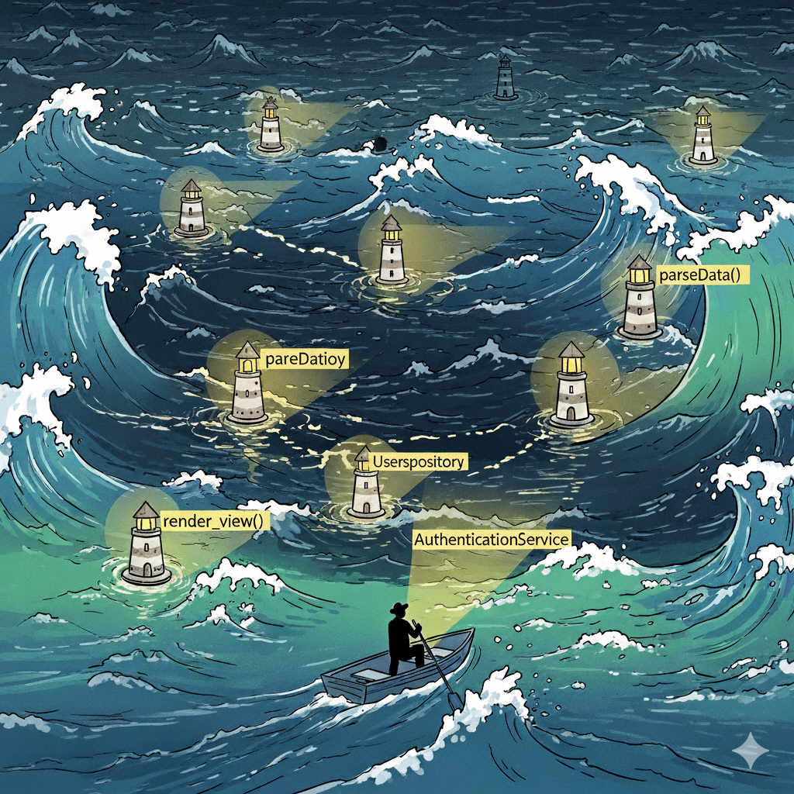

flowchart TD
A[Programming Syntax] --> D[High Cognitive Load]
B[Algorithmic Design] --> D
C[Implementation Complexity] --> D
D --> E[Quick Naming Decisions]
E --> F[Generic Names]
E --> G[Shortened Names]
E --> H[Context-Dependent Names]
style A fill:#f8f9fa,color:#000
style B fill:#f8f9fa,color:#000
style C fill:#f8f9fa,color:#000
style D fill:#fff3e0,color:#000
style E fill:#ffebee,color:#000
style F fill:#ffcdd2,color:#000
style G fill:#ffcdd2,color:#000
style H fill:#ffcdd2,color:#000
Dealing with the Second Hardest Thing in Computer Science
Transforming Code Clarity Through Better Names
Indrajeet Patil

Source code for these slides can be found on GitHub.
What you’ll learn today
- Why naming impacts code quality and maintainability
- How naming improves software design and architecture
- Common naming pitfalls to avoid
- Practical strategies for clear, consistent, and meaningful names†
- Tools and techniques for better naming (AI, code review)
🎯 Goal
Transform naming from an afterthought into a deliberate practice.
“There are only two hard things in Computer Science: cache invalidation and naming things.”
- Phil Karlton
Why naming matters
Navigating the codebase with good names as beacons of clarity

Why naming is hard
Multiple cognitive demands exhaust mental capacity, leaving little for naming.
Result: Naming becomes reactive rather than deliberate
The hidden cost of poor naming
Immediate consequences:
- Longer code reviews due to unclear intent
- Debugging becomes detective work
- Extended onboarding for new team members
Long-term impact:
- Technical debt accumulation from avoidance
- Higher bug introduction rates
- Risky refactoring due to uncertainty
The multiplication effect
Poor naming spreads confusion throughout the entire system.
Good names pay dividends
Development velocity:
- Code reviews focus on logic, not deciphering
- Faster component targeting during debugging
- Confident feature development
Maintenance benefits:
- Safe and predictable refactoring
- Root cause fixes over symptom patches
- Self-documenting code
The investment mindset
Time spent on naming is not overhead—it’s an investment that pays compound interest.
Naming and good design
Illustrating naming benefits for software design using functions as examples
Following Unix philosophy
Unix Golden Rule: “Do One Thing And Do It Well”
Naming reveals if you’re following this rule.
Warning: Functions with and or or in names likely violate this principle!
Function parameter names
Parameter Naming Rule: Boolean/flag parameters often signal functions doing multiple things
Parameter names reveal design problems.
Insight: If you need a flag parameter, consider splitting into separate functions
Naming: The Do’s and Don’ts
“The beginning of wisdom is to call things by their proper name.” - Confucius
The Don’ts
Follow this principle instead of memorizing rules:
Names must be readable for the reader, not author, of code.
| Tip | Why | Bad | Good |
|---|---|---|---|
| Confusion & Similarity | |||
| Avoid imprecise opposites | Can be confusing | begin/last |
begin/end or first/last |
| Don’t use hard-to-distinguish characters | Look identical with certain fonts | count0, counto |
count_zero, count_letter |
| Don’t use similar names for different meanings | Easily confused, need 2+ letter difference | PatientRecs, PatientReps |
PatientRecords, PatientReports |
| Avoid naming entities with homonyms | Leads to confusion in discussion | waste, waist |
garbage, body_circumference |
| Don’t use easily confused names | Too similar, mistaken identity | nn, nnn |
n_square, n_cube |
| Consistency & Standards | |||
| Don’t use inconsistent abbreviations | Choose one prefix and use consistently | numColumns, noRows |
numColumns, numRows |
| Don’t allow multiple English standards | Causes constant guessing | centre, center (mixed) |
center (consistent) |
| Don’t use misleading abbreviations | Conflicts with language conventions | str (for “structure”) |
structure |
| Avoid misleading names | Wrong info is worse than no info | get_means() (incorrectly implies precomputed) |
compute_means() (correctly indicates computation) |
| Tip | Why | Bad | Good |
|---|---|---|---|
| Communication & Clarity | |||
| Don’t use pop-culture references | Not everyone knows them | thats_what_she_said |
female_birdsong_recording |
| Don’t use slang | Can’t assume familiarity | hit_the_road() |
exit() |
| Avoid unintended meanings | Check Urban dictionary | dump() |
export_data() |
| Don’t use uncommon English words | Stick to common parlance | commence_process() |
start_process() |
| Don’t use unpronounceable names | Enables easier verbal communication | genymdhms() |
generate_timestamp() |
| Technical & Maintainability | |||
| Don’t misspell to save characters | Correct misspelling is harder to remember | hilite |
highlight |
| Don’t use commonly misspelled words | Slows you down, increases errors | accumulate variants |
sum, collect |
| Don’t use numeric suffixes for levels | Not informative | level1, level2, level3 |
beginner, intermediate, advanced |
| Don’t use unsearchable names | Hard to find and replace | a, f |
arr, fun |
| Don’t prioritize grammar over clarity | Plural forms aid comprehension | fish (for multiple) |
fishes, peoples, feedbacks |
The Do’s
Follow this principle instead of memorizing rules:
Good names reveal intention and eliminate guesswork.
Names should be self-documenting
Name quality correlates inversely with comment detail needed.
Tip
Good names rarely require readers to read the documentation to understand what they represent.
Names should be specific
Generic names are widely used and acceptable in short-lived contexts. However, as scope and complexity increase, specific names become essential for clarity.
For longer loops, use meaningful names instead of i, j, k:
All variables are temporary. Calling one tmp invites carelessness.
Tip
Even when you think you need generic names, you are better off using more descriptive names.
Names should be difficult to misinterpret
Try to misinterpret candidate names.
Tip
Precise and unambiguous names leave little room for misconstrual.
Names should be appropriately abstract
Find the right level of detail and domain focus—precise enough to be clear, concise enough to be readable, and focused on what rather than how.
Use context to eliminate redundancy:
Avoid encoding implementation details in names:
Find the precision sweet spot:
Tip
Good names focus on purpose, include critical details, and remain meaningful across implementations.
Names should maintain standards
Standards reduce cognitive burden by enabling knowledge reuse across contexts.
Avoid conflicting meanings and maintain consistency:
Follow language and domain conventions:
Use consistent prefixes for IDE tab completion:
Following a standard consistently is more important than which standard you adopt.
Aside: Examples of Conventions
Programming Language specific
| Language | Variables | Functions | Classes | Constants |
|---|---|---|---|---|
| Scala | camelCase |
camelCase |
PascalCase |
UPPER_SNAKE_CASE |
| Kotlin | camelCase |
camelCase |
PascalCase |
UPPER_SNAKE_CASE |
| Rust | snake_case |
snake_case |
PascalCase |
SCREAMING_SNAKE_CASE |
| Swift | camelCase |
camelCase |
PascalCase |
camelCase |
| Elixir | snake_case |
snake_case |
PascalCase |
@upper_snake_case |
Technology Stack specific
| Layer | Convention | Examples |
|---|---|---|
| Database | snake_case |
user_profiles, created_at |
| REST APIs | kebab-case/snake_case |
/user-profiles, user_name |
| GraphQL | camelCase |
userProfile, orderItems |
| CSS/HTML | kebab-case |
.nav-menu, #main-content |
| DevOps | kebab-case |
my-app-deployment |
| URLs/Routes | kebab-case |
/api/user-accounts, /admin/user-settings |
| Event Names | camelCase/kebab-case |
userSignedIn, order-completed |
Consistency within each layer matters more than uniformity across layers
Unnecessary details in names should be removed…
Avoid redundancy
- In type names, avoid using class, data, object, and type (e.g. bad:
classShape, good:Shape) - In function names, avoid using be, do, perform, etc. (e.g. bad:
doAddition(), good:add())
but important details should be kept!
Tip
If some information is critical to know, it should be part of the name.
Boolean names should be clear
Names for Boolean variables or functions should make clear what true and false mean. This can be done using prefixes (is, has, can, etc.).
In general, use positive terms for Booleans since they are easier to process.
Tip
Boolean variable names should convey what true or false values represent.
Choose domain-appropriate names
Select terminology that matches your context: computer science terms for technical concepts, problem domain terms for business logic.
Use computer science terms for technical concepts:
Use problem domain terms for business concepts:
flowchart TD
Title["Layered Architecture"]
UI["Presentation<br/>(Controllers)"]
BL["Business Logic<br/>(Services)"]
DA["Data Access<br/>(Repository)"]
Title -.-> UI
UI --> BL
BL --> DA
style Title fill:none,stroke:none,color:#666
style UI fill:#e3f2fd,color:#000
style BL fill:#fff3e0,color:#000
style DA fill:#f3e5f5,color:#000
Tip
Choose names that are meaningful to both developers and domain experts.
Use appropriate grammatical forms
Follow consistent patterns: nouns for entities and data, verbs for actions.
Classes and objects should use nouns:
Methods that return values use nouns, action methods use verbs:
Tip
Grammatical consistency helps readers predict what methods do without reading documentation.
Utilizing tools
Naming limitations of linters
What they CAN do:
- Enforce naming conventions
- Check for reserved keywords
- Detect naming pattern violations
- Flag overly short or long names
- Ensure consistent formatting
What they CANNOT do:
- Understand the intent behind your code
- Suggest meaningful names based on context
- Assess whether names represent what entities do
- Determine problem domain consistency
- Evaluate clarity for future developers
The fundamental limitation
Linters can enforce syntax but not semantics. Good naming requires human understanding of both the problem and the solution.
Generative AI tools can be valuable allies
AI tools have context of your entire codebase and can provide meaningful names.
Why AI tools can help:
- Full context understanding of functions/classes
- Cross-domain pattern recognition
- Inconsistency detection across codebase
- Multiple naming suggestions with rationales
flowchart TD
H[Human] --> L[Linter]
A[AI] --> L[Linter]
H -.->|Collaborates| A
A -.->|Feedback| H
L --> S[Standardized Names]
style H fill:#e3f2fd
style A fill:#f3e5f5
style L fill:#fff3e0
style S fill:#e8f5e8
Symbiotic Naming
Try to come up with good names yourself. Then, ask AI tools to validate, assess, or suggest improvements.
Code Review: A fresh perspective
Lower cognitive load + fresh perspective = ideal conditions for better naming.
flowchart TD
A[Code Review] --> B[Lower Cognitive Load]
B --> C[Fresh Perspective]
B --> D[Focus on Clarity]
C --> E[Question Assumptions]
C --> F[Spot Unclear Names]
D --> G[Evaluate Intent]
D --> H[Assess Abstractions]
E --> I[Better Names]
F --> I
G --> I
H --> I
style A fill:#e3f2fd,color:#000
style B fill:#f3e5f5,color:#000
style C fill:#f8f9fa,color:#000
style D fill:#f8f9fa,color:#000
style E fill:#fff3e0,color:#000
style F fill:#fff3e0,color:#000
style G fill:#fff3e0,color:#000
style H fill:#fff3e0,color:#000
style I fill:#e8f5e8,color:#000
Code review transforms naming from reactive to deliberate!
Benefits of good names
“In your name I will hope, for your name is good.” - Psalms 52:9
“What’s in a name?” Well, everything!
- Intent-revealing names make the code easier to read.
- Trying to find good names forces you to detach from the problem-solving mindset and to focus on the bigger picture that motivates this change. This is critical for thoughtful software design.
- Searching for precise names requires clarity, and seeking such clarity improves your own understanding of the code.
- Naming precisely and consistently reduces ambiguities and misunderstandings, reducing the possibility of bugs.
- Good names reduce the need for documentation.
- Consistent naming reduces cognitive overload for the developers and makes the code more maintainable.
Naming is hard, but worth it
Invest time in good names early—they pay dividends by reducing system complexity.
The more you do it, the easier it will get!
“Using understandable names is a foundational step to producing quality software.” - Al Sweigart
Thank You
And Happy Naming! 😊
TL;DR Summary
Principle: Names are a form of abstraction
“[T]he best names are those that focus attention on what is most important about the underlying entity, while omitting details that are less important.” - John Ousterhout
Importance: Names are at the core of software design
If you can’t name something well, the design may be unclear.
Properties: Good names are precise and consistent
Good names prevent missing critical information or misunderstanding what entities represent.
ICYMI: Available casing conventions
There are various casing conventions used for software development.

Illustration (CC-BY) by Allison Horst
Further Reading
For a more detailed discussion about how to name things, see the following references.
References
McConnell, S. (2004). Code Complete. Microsoft Press. (pp. 259-290)
Boswell, D., & Foucher, T. (2011). The Art of Readable Code. O’Reilly Media, Inc. (pp. 7-31)
Martin, R. C. (2009). Clean Code. Pearson Education. (pp. 17-52)
Hermans, F. (2021). The Programmer’s Brain. Manning Publications. (pp. 127-146)
Ousterhout, J. K. (2018). A Philosophy of Software Design. Palo Alto: Yaknyam Press. (pp. 121-129)
Goodliffe, P. (2007). Code Craft. No Starch Press. (pp. 39-56)
Padolsey, J. (2020). Clean Code in JavaScript. Packt Publishing. (pp. 93-111)
Thomas, D., & Hunt, A. (2019). The Pragmatic Programmer. Addison-Wesley Professional. (pp. 238-242)
For a good example of organizational naming guidelines, see Google C++ Style Guide.
For more
If you are interested in good programming and software development practices, check out my other slide decks.